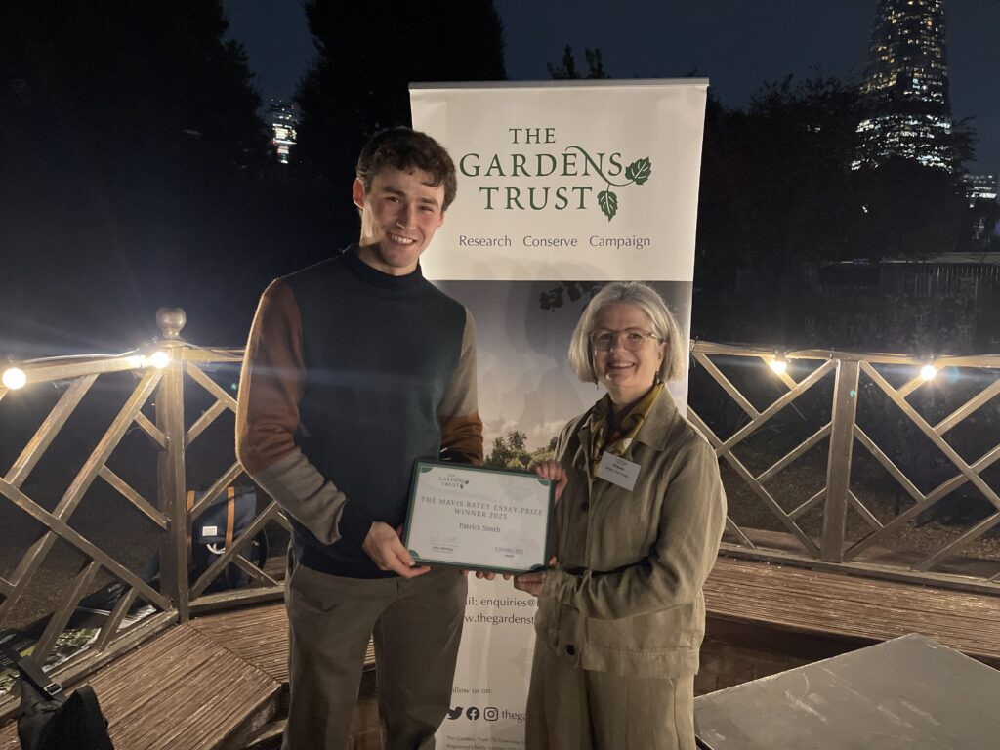
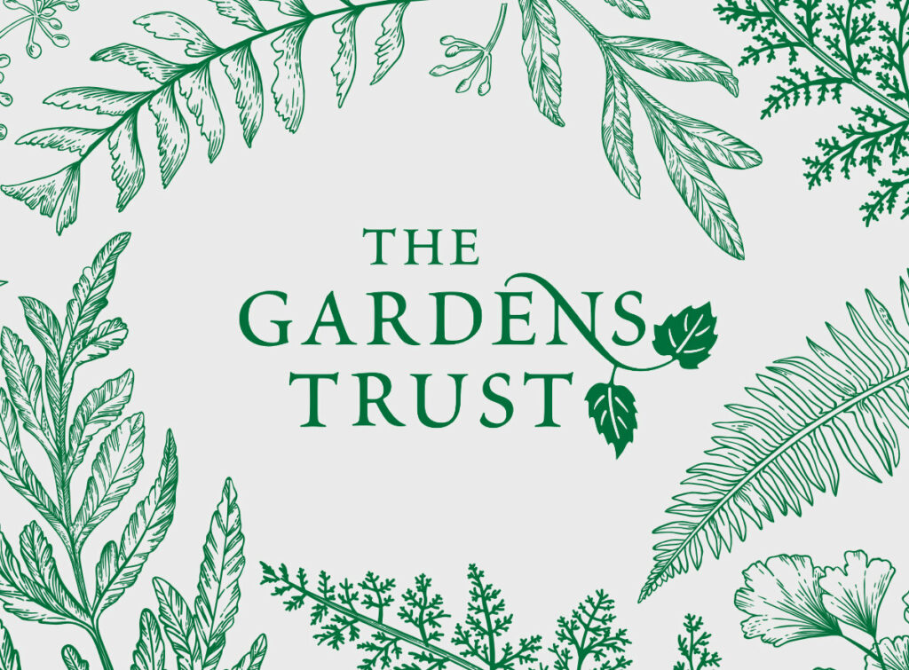
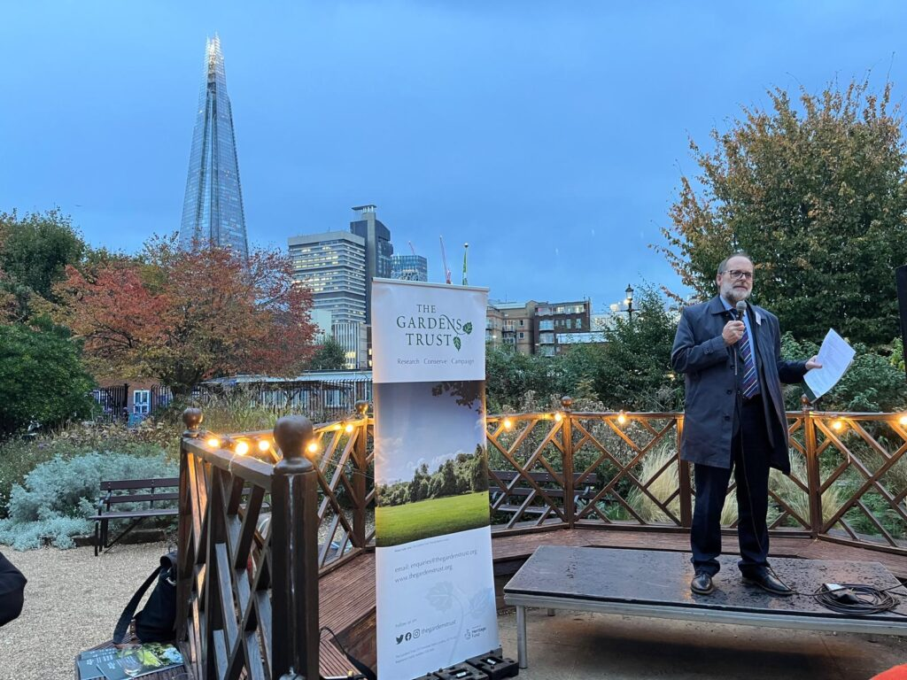
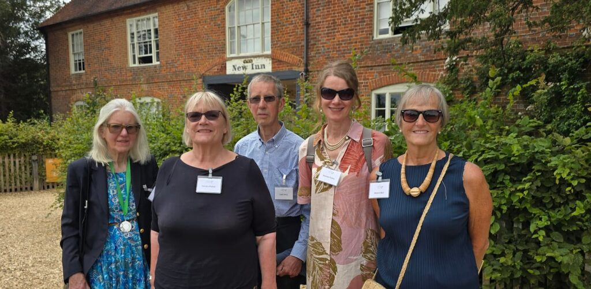
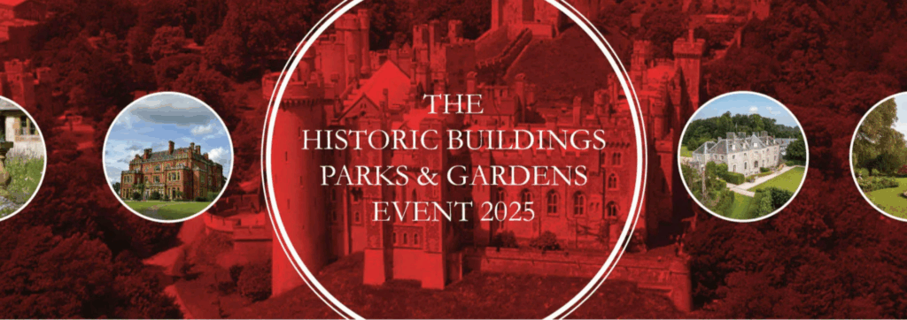
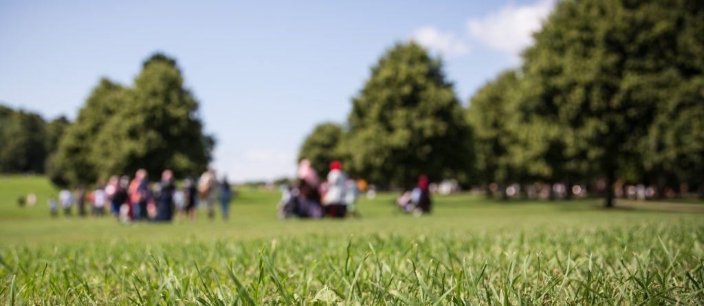
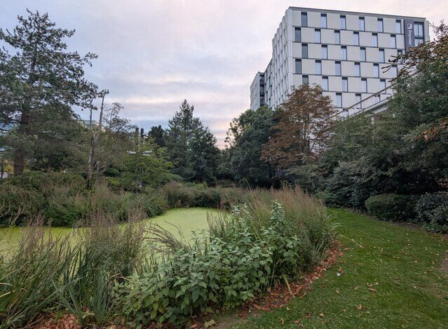

Linden Groves speaks up for parks and gardens on HortWeek and Roots and All podcasts
This month our Director Linden Groves has taken our campaign to the airwaves to highlight the vital importance of protecting
Read More
Stay updated with the latest news and events from Essex Garden Trust.
This month our Director Linden Groves has taken our campaign to the airwaves to highlight the vital importance of protecting
Read More
The Mavis Batey Essay Prize is our annual competition which aims to encourage vibrant, scholarly writing and new research, especially...
Read More
This year, we are celebrating 10 years of the Gardens Trust: a decade of championing the rich heritage of historic... (more)
Read More
We were delighted to welcome distinguished guests from organisations ranging from government departments to fellow charities to launch our report... (more)
Read More
Fitting for the Gardens Trust’s 10th anniversary year, 2025 has seen an extraordinary clutch of nominations for the Volunteer Award.... (more)
Read More
We are pleased to share that the Gardens Trust will again be exhibiting at the annual Historic Buildings, Parks & Gardens Event... (more)
Read MoreThe Gardens Trust is looking to appoint a new Treasurer and would love it to be you! Our new Treasurer... (more)
Read More
The Gardens Trust is cheered by the incredible show of support for its role in the English planning system during... (more)
Read More
The Gardens Trust is launching a Call for Papers and Participation for a conference on New Towns: Learning from the Past, Planning for the Future... (more)
Read More